使用计算节点
导读
为了提升 DolphinDB 在高并发读写场景下的性能与稳定性，DolphinDB 在架构上引入了计算节点 （compute node） 。计算节点接管了数据节点的部分职能，负责响应客户端的请求并返回结果。在架构层面，将集群的计算与存储进行分离，保证数据节点的软硬件资源有效服务于 IO 过程，从而提升集群写入性能与稳定性。同时 DolphinDB 集群管理者可以根据业务需求和集群负载情况，对计算资源和存储资源独立扩展。
本教程将重点介绍计算节点的特性、架构设计、应用实践及运维管理等方面内容，通过原理解析、案例分析来讲解如何部署和使用计算节点。
面向读者
- 架构师（1-5章）
- DolphinDB DBA（第1、2、4章）
- 开发工程师 （第1、3章）
- 运维工程师 （第1、4章）
概览
为什么引入计算节点
数据节点可以同时承担计算任务和数据读写任务的执行，对于一些计算任务不重的场景来说，数据节点兼任计算任务没有问题，但是对于计算逻辑较复杂，并发度较高的计算密集场景下，可能会有以下影响：
- 对于数据写入的影响：由于密集计算任务会大量消耗 CPU 和内存资源，而数据写入时需要 CPU 来进行数据的预处理和压缩，因此会影响数据写入性能。
- 对于数据读取的影响: 若大量内存被计算任务占用，那么读取数据时，可能因内存不足导致 OOM 异常。
DolphinDB 自版本1.30.14，2.00.1开始支持计算节点，能够有效地解决上述问题。
计算节点简介
核心特性
计算节点，顾名思义，即执行计算任务的节点，相比于数据节点，有以下2个核心特性：
不存储分布式表数据
不存储分布式表数据、元数据文件，是一个轻状态的服务组件。计算节点的启停流程十分精简，任何故障都可以通过重启节点来进行快速修复。同时，计算节点可以进行快速地扩缩容。
如下图所示 3 个数据节点、3 个计算节点的集群：
图 1. 1-1 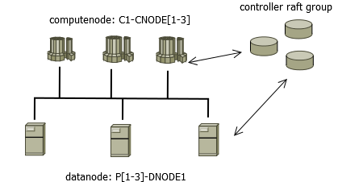
图中 C1-CNODE1 至 C1-CNODE3 为计算节点，P1-DNODE1 至 P3-DNODE1 为数据节点。
从文件系统来简单验证下计算节点的无状态特性。查看数据节点 volume 配置：
# 查看存储卷 select * from pnodeRun(getConfig{`volumes}) P1-DNODE1 /ssd/ssd0/wfHuang/volumes/P1-DNODE1 P2-DNODE1 /ssd/ssd0/wfHuang/volumes/P2-DNODE1 P3-DNODE1 /ssd/ssd0/wfHuang/volumes/P3-DNODE1到操作系统去查看数据节点 P1-DNODE1 的 volume 目录：
图 2. 图1-2 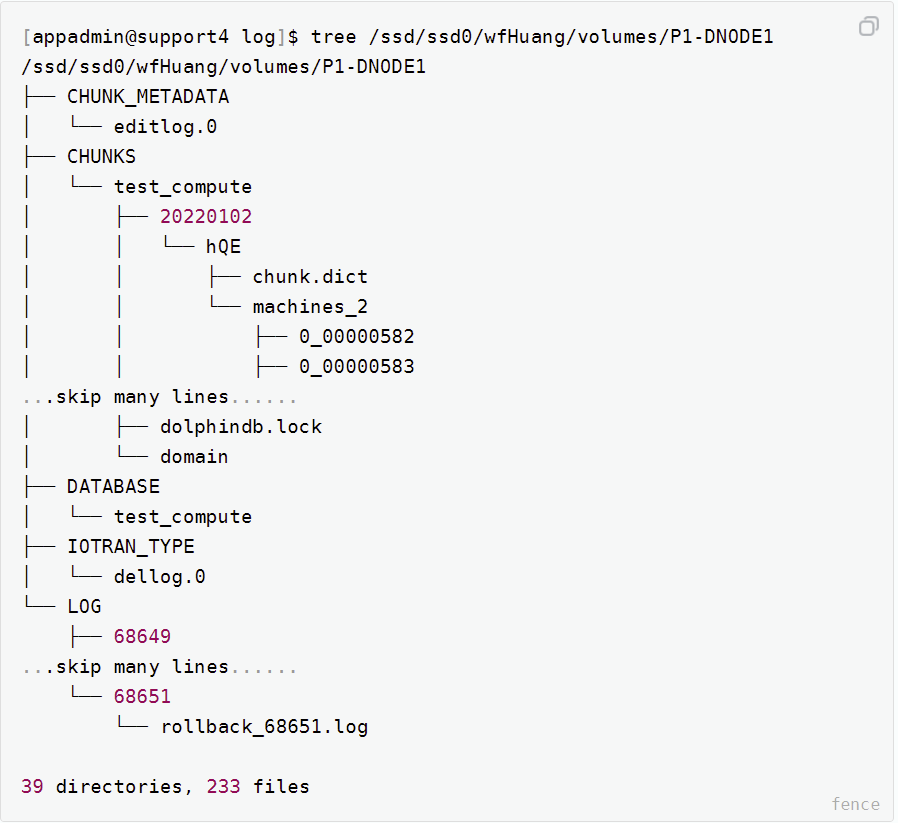
可看到 P1-DNODE1 作为数据节点，管理着事务 undo/redo 日志文件，和大量的数据块 CHUNKS 文件。但计算节点不需要配置 volume, 查看 C1-CNODE1 的默认 data 目录：
图 3. 图1-3 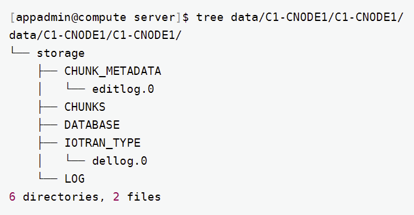
可以看到计算节点 C1-CNODE1 不存储任何的分布式数据文件。
负责计算
在分布式表读写场景中，由数据节点负责 map 阶段，计算节点负责 merge-reduce 阶段（详见通过一个-sql-查询理解计算节点）。在纯内存对象（常规内存表、分区内存表、流数据表等）计算场景中，由计算节点独立执行。
执行一个分布式表查询 SQL，从文件层面来观察计算节点在数据查询发挥的作用。
查看计算节点 C1-CNODE1 打开的文件（open files）：
[appadmin@compute volumes]$ lsof -p pidOfComputenode skip library files compute_w 38563 appadmin 19u IPv4 319181009 0t0 TCP compute:8961->192.192.168.2:56780 (ESTABLISHED) compute_w 38563 appadmin 20u IPv4 319103550 0t0 TCP compute:8961->192.192.168.2:56786 (ESTABLISHED) compute_w 38563 appadmin 22u IPv4 319095550 0t0 TCP compute:8961->192.192.168.2:34842 (ESTABLISHED) ...skip 20 lines...... compute_w 38563 appadmin 44u IPv4 319337513 0t0 TCP compute:42566->192.192.168.2:8961 (ESTABLISHED)查看数据节点 P1-DNODE1 打开的文件：
[appadmin@support4 log]$ lsof -p pidOfDatanode compute_w 99763 appadmin 33u IPv4 49451766 0t0 TCP support4:8961->192.192.168.1:42474 (ESTABLISHED) compute_w 99763 appadmin 36u IPv4 49455618 0t0 TCP support4:8961->192.192.168.1:42562 (ESTABLISHED) compute_w 99763 appadmin 39r REG 8,17 272358102 177313580 /ssd/ssd0/wfHuang/volumes/P1-DNODE1/CHUNKS/test_compute/20220102/hQE/machines_2/1_00000058 compute_w 99763 appadmin 40r REG 8,17 272358117 177313646 /ssd/ssd0/wfHuang/volumes/P1-DNODE1/CHUNKS/test_compute/20220106/hQE/machines_2/1_00000062 compute_w 99763 appadmin 41r REG 8,17 272358131 177313802 /ssd/ssd0/wfHuang/volumes/P1-DNODE1/CHUNKS/test_compute/20220227/hQE/machines_2/1_00000072 compute_w 99763 appadmin 42r REG 8,17 272358111 177313644 /ssd/ssd0/wfHuang/volumes/P1-DNODE1/CHUNKS/test_compute/20220109/hQE/machines_2/1_00000060 ......skip hundreds of lines......可以观察到计算节点 C1-CNODE1 打开了大量的 TCP 连接符，而数据节点 P1-DNODE1 除了 TCP 连接符外，还打开了大量的磁盘文件。
图 4. 图1-4 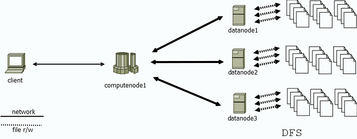
如上图所示，计算节点 computenode1 负责解析 client 的请求，并协调数据节点 datanode[1-3] 读/写数据（即 map，分布式执行过程）。接收到 datanode[1-3] 的数据后，经过 reduce-merge 过程，将最终结果返回给客户端。存算分离的架构，使得数据节点的物理资源得到隔离，写入和读取数据更为稳定、高效。
通过一个 SQL 查询理解计算节点
当客户端向计算节点发起一个 sql 查询：
pt1 = loadTable(database("dfs://szstock"),"sztrade")
select [HINT_EXPLAIN]
securityID, min(price) as LowPx, max(price) as HighPx, sum(tradeQty) as vol
, first(price) as OpenPx, last(price) as LastPx, sum(tradeQty * price) as val
from pt
where execType="F"
group by tradedate,securityID,minute(temporalParse(tradetime$STRING, "yyyyMMddHHmmssSSS")) as minute
order by tradedate,securityID, minute通过 [HINT_EXPLAIN] 获取执行计划，整个 sql 的执行过程依次为 parse，map，merge，reduce 四个部分。
{
"measurement": "microsecond",
"explain": {
"from": {
"cost": 2
},
"map": {
"partitions": {
"local": 0,
"remote": 320
},
"cost": 5189927,
"detail": {
...skip many lines...
},
"merge": {
"cost": 446588,
"rows": 8522241,
"detail": {
...skip many lines...
}
}
},
"reduce": {
"sql": "select [98307] * from 702a9832b17f0000 order by tradedate asc,securityID asc,minute asc",
"explain": {
"sort": {
"cost": 296783
},
"rows": 8522241,
"cost": 746374
}
},
"rows": 8522241,
"cost": 6691112
}
}其中，query parse、merge、reduce 过程发生在计算节点，map 阶段则并行发生于各数据节点。
整个执行过程消耗资源具体如下表。
| 执行步骤 | 发生节点 | 消耗资源 | 时间(us) |
|---|---|---|---|
| query parse | computenode | cpu | 2 |
| map | datanode * 3 | IO, network，cpu, memory | 5189927 |
| merge | computenode | cpu，network, memory | 446588 |
| reduce | computenode | cpu，network, memory | 746374 |
该 SQL 总共涉及 300 个分区，各分区记录数在 60-280 万不等。merge-reduce 阶段分布处理了 850 万的数据。由 C1-CNODE1 承担的 merge-reduce 阶段总耗时占比为
（446588 + 746374）/ 6691112 = 17.8%
上述例子 map 阶段 where，group by 算子大大减少了数据量，因此计算节点的算量不大，如果是读取数据类的场景，比如数据导入导出，此比例会大大增加。
执行过程中，计算节点与数据节点的内存消耗情况如下图所示（node33：计算节点，node34-36：数据节点，下同）。
可以看出在 map 阶段在数据节点，是分布式、并行执行的。在 merge-reduce 过程中计算节点的内存消耗逐渐增加。
引入计算节点的好处
保证写入数据的稳定性
在数据节点上执行复杂业务计算（如因子计算、机器学习等），会占用大量的内存。使得 cacheEngine 无法获取足够多的内存，而发生 cacheEngine 内存溢出等问题，导致写入延迟，甚至失败。
ChunkCacheEngine can't reclaim any memory after trying 13 times.
Transation failed, cacheEngine out of memory.另外，使用 TSDB 引擎，数据刷盘时需进行排序，需要消耗大量的 CPU 资源以及排序 buffer。若 CPU 、内存资源不足时，TSDB 的写入性能会下降。
通过在架构上引入计算节点，采用计算与存储分离的架构设计，可以有效地保证集群数据写入的稳定性。
降低故障平均修复时间
使用计算节点的集群能显著地降低故障平均修复时间，尽可能地减少对业务的影响。核心原因是由于计算节点不管理分布式数据，重启可以在数秒内完成。当某个计算节点出现拥塞、无法响应等情况，且无法热修复的，重启即可使其恢复正常服务。
如图，当数据节点启动时，流程中的蓝色标记部分：“回放 redo 日志”，“恢复损坏的 chunk” 等包含了大量的 IO 操作，实际生产环境中耗时为分钟级（具体视数据量大小而定）。而计算节点流程十分精简，可以在秒级完成启动。
计算节点安装
现用如下 4 台服务器部署集群：
- P1: 192.193.168.2
- P2: 192.193.168.3
- P3: 192.193.168.4
- C1: 192.193.168.1
其中服务器 P1-P3 用于部署数据节点，C1 用于部署计算节点。
编写配置文件
在节点列表文件 cluster.nodes 中编写计算节点及代理节点。推荐计算节点以 CN (取 compute node 首字母) 标识，数据节点以 DN (取 datanode 首字母) 标识，如：
localSite,mode
192.193.168.2:8990:controller1,controller
192.193.168.3:8990:controller2,controller
192.193.168.4:8990:controller3,controller
192.193.168.2:8960:P1-agent,agent
192.193.168.3:8960:P2-agent,agent
192.193.168.4:8960:P3-agent,agent
192.193.168.1:8960:C1-agent,agent
192.193.168.2:8961:DN1,datanode
192.193.168.3:8961:DN2,datanode
192.193.168.4:8961:DN3,datanode
192.193.168.1:8961:CN1,computenode
192.193.168.1:8966:CN2,computenode
192.193.168.1:8967:CN3,computenode在配置文件 cluster.cfg 中，需要使用前缀来区分数据节点与计算节点的配置项。
CN%.workerNum=64
CN%.maxConnections=3000
CN%.maxMemSize=256
CN%.dataSync=0
DN%.maxConnections=512
DN%.maxMemSize=128
DN%.workerNum=32
DN%.chunkCacheEngineMemSize=6
DN%.dataSync=1
DN%.redoLogDir=/ssd/ssd0/wfHuang/volumes/redoLog
DN%.volumes=/ssd/ssd0/wfHuang/volumes,/ssd/ssd1/wfHuang/volumes,/ssd/ssd2/wfHuang/volumesCN% 匹配 CN 开头的计算节点，DN% 匹配 DN 开头的数据节点。以此保证计算节点与数据节点的配置项不会互相干扰。
注：计算节点必须配置 dataSync = 0 。
启动计算节点
参考集群安装模式部署并启动 agent、controller 节点。启动完成后后，使用 web 启动计算节点。
架构设计
计算节点的设计和硬件规划
依据上文解析，计算节点主要负责接收、响应请求以及内存计算，数据节点主要负责数据存储管理。在集群设计与规划时，生产环境最小硬件配置推荐如下：
| 组件 | CPU | 内存 | 网络 | 硬盘 |
|---|---|---|---|---|
| datanode | 8 核+ | 64GB+ | 10Gb 网卡 | ssd/hdd，500GB+建议元数据存 ssd，分区数据存 hdd |
| computenode | 16 核+ | 128GB+ | 10Gb 网卡 | hdd,200GB |
计算节点更注重 cpu、内存、网卡性能。而数据节点更注重 iops ，存储通道与容量。集群拓扑结构可根据应用场景与需求参考下文设计。
单计算节点集群架构
单一的计算节点，可以做为请求统一入口。此时拓扑简单，部署方便。
高可用计算节点集群架构
在 DolphinDB 数据库层面，部署多个计算节点，扩展集群计算容量，并实现高可用。
从计算节点发起 DFS 表读写请求时，可以容忍部分数据节点实例级别的故障（比如某个数据节点的服务器断电），其崩溃恢复策略如下：
写
从计算节点写入数据时，如果某个数据节点发生了崩溃，事务管理器会回滚当前失败的事务。并以一个新的事务，重试数据写入，整个过程对于客户端程序是透明无感知的。
图 11. 图2_3 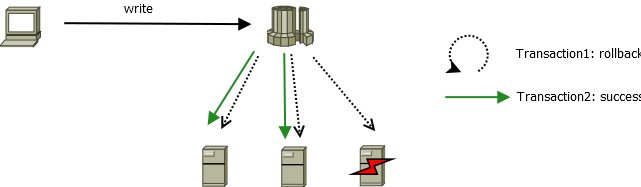
读
DolphinDB 默认采用 2 副本（确保强一致性），当计算节点发现部分子任务失败时，会根据可用 chunk 副本的分布，重新调度新的 subTask 到对应数据节点中去，实现任务的崩溃恢复。
图 12. 图2_4 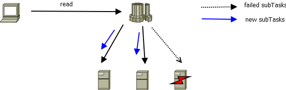
在中间件层面，可以引入负载均衡组件（如 haproxy，F5 等）来实现集群统一访问接口。
流计算节点
生产环境中，流数据对时延要求非常高。在多人、多业务场景使用集群时，数据节点由于本身还是承担着数据读写操作，不可避免地在一定程度上影响流计算。在设计上，可以将流计算相关业务单独地部署至某计算节点实例。
图示，使用 computenode3 作为流计算节点，专门负责流计算业务。在另外两个计算节点上进行批量读写，通过计算节点之间的 Share-nothing 架构特性，有效保证流计算的低时延。
基于计算节点实例的资源隔离
在生产环境中，若有多人同时使用 DolphinDB 集群，需要一定的资源隔离机制来保障核心业务稳定运行。可以在架构层面，配合负载均衡策略，实现基于计算节点的资源隔离。
以 haproxy 为例，在 haproxy.cfg 中设置2个监听组
ddb-cluster：核心业务使用计算资源组，总共6000连接，2个计算节点，高可用。
ad-hoc-single：用于即席查询的计算节点，配置为单节点，限制1000连接，用于分析师，研究员等对数据做一些探索和即席查询。
listen ddb-cluster bind 0.0.0.0:5000 mode tcp balance leastconn server compute1 192.168.168.1:8961 maxconn 3000 check server compute2 192.168.168.1:8966 maxconn 3000 check listen ad-hoc-single bind 0.0.0.0:10090 mode tcp balance leastconn server compute3 192.168.168.1:8967 maxconn 1000 check
应用场景
所有数据节点的计算任务、代码都可以无缝迁移到计算节点。集群管理与使用者应当避免直接访问数据节点，转而使用计算节点作为查询与写入的入口。具体演示数据读取、写入、流计算、机器学习。
数据读取
使用 python api 从计算节点读取某一只股票的历史交易数据。
import DolphinDB as ddb def getData(date, securityID, rowNum=1000000): s = ddb.session() s.connect("computenode1", 8961, "admin", "123456") trade = s.loadTable(tableName="sztrade", dbPath="dfs://szstock) rst = trade.select("*").where("tradedate = %d" % date)\ .where("securityID = '%s'" % securityID) \ .where("execType=\"F\"")\ .limit(rowNum).toDF() s.close() return rst if __name__ == '__main__' : print(getData(20200102, "000014"))
数据写入
将历史行情数据导入 DolphinDB ，具体操作请参考国内股票行情数据导入实例。导入 2020 年 1 月数据，共计 82G 数据时，集群计算节点，数据节点消耗情况如下：
cpu/memory
图 15. 图3_1 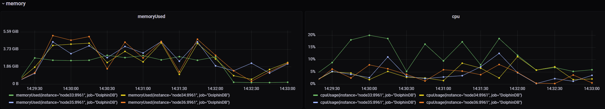
io
图 16. 图3_2 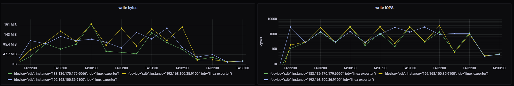
在执行导入过程中，计算节点 cpu 均值在15%，峰值达到20%，内存消耗约2.8G。
流计算
流计算的核心诉求是时延，如果采用数据节点作为流计算节点，必不可免地会受到分布式表读取与写入的影响。配置计算节点成为流计算节点，可以有效地保障 CPU，memory，io，worker 线程等软硬件资源服务于流计算，从而保证低时延。并且由于计算节点之间是互不影响的，推荐在架构上设计部分计算节点作为流计算节点，其他计算节点用于分析与查询。
配置计算节点
设计 CN1 作为流计算的订阅和发布节点，配置文件如下：
# publish
CN1.persistenceDir=/ssd/ssd0/persistDir/C1-CNODE1
CN1.persistenceWorkerNum=4
CN1.maxPubConnections=64
# subscribe
CN1.maxSubConnections=64
CN1.subPort=8970
CN1.subExecutors=16创建与订阅流数据表
在计算节点 CN1 上创建流数据表：
t = streamTable(1:0, `sym`price, [STRING,DOUBLE])
enableTableShareAndPersistence(t, `tickStream)订阅并编写实时因子计算：
def sum_diff(x, y){
return (x-y)/(x+y)
}
factor1 = <ema(1000 * sum_diff(ema(price, 20), ema(price, 40)),10) - ema(1000 * sum_diff(ema(price, 20), ema(price, 40)), 20)>
result = table(1000:0, `sym`factor1, [STRING,DOUBLE])
rse = createReactiveStateEngine(name="reactiveDemo", metrics =factor1, dummyTable=tickStream, outputTable=result, keyColumn="sym")
subscribeTable(tableName=`tickStream, actionName="factors", offset=-1, handler=tableInsert{rse})往 CN1 模拟写入消息（同时另一个计算节点 CN2 执行导入数据作业）
n = 2000000
data = table(take("000001.SH", n) as sym, rand(10.0, n) as price)
tickStream.append!(data)
getStreamingStat().subWorkers查看集群的资源消耗情况：

可以看到 CN2, DN1-3 在消耗相对较高的内存和 CPU 时，CN1 并没有受到数据导入的影响，使得流计算的时延得到有效保证。
机器学习
机器学习是计算密集型的场景，模型的训练过程会消耗大量的 CPU、内存资源。将机器学习的作业部署至某个计算节点，可以避免对数据写入、读取类任务的负面影响。
def tranAdaBoost(TrainData){
db = database(,HASH, [SYMBOL, 10])
p10TranData = db.createPartitionedTable(table=TrainData, partitionColumns=`SecurityID)
p10TranData.append!(TrainData)
model = adaBoostRegressor(sqlDS(<select * from p10TranData>), yColName=`targetRV, xColNames=`BAS`DI0`DI1`DI2`DI3`DI4`Press`RV, numTrees=30, maxDepth=16, loss=`square)
saveModel(model, "/hdd/data/finance/model/adaBoost.txt")
}
jobId="adaBoost"
jobDesc="adaBoost train snap"
submitJob(jobId, jobDesc, tranAdaBoost, Train)完整代码及过程请参考实时实际波动率预测 。使用 10 个线程并行训练，加速训练过程。

在 CN2 训练过程中，其他节点资源未受影响。同时如果想加速机器学习训练过程，可以使用更多的线程，为 CN2 额外配置一些 CPU、内存资源，在资源管理上非常灵活。
运维
集群监控
引入计算节点的集群，在运维监控层面，需要以存储与计算分离的架构来进行监控。对于数据节点、计算节点的监控侧重点不同。具体来说，计算节点需要关注客户端请求执行情况的相关性能：包括平均响应时间、连接数、内存、CPU 使用率、网卡带宽使用率等；而数据节点更需要关注磁盘空间、IOPS、读写 MB/s 等 IO 相关指标。
监控软件部署
通过部署第三方软件：Grafana，Prometheus 实现集群的管理与监控，具体流程参考 集群监控。
监控面板
提供计算节点与数据节点监控 dashboard，是基于存储与计算分离架构设计的一套监控面板。已上传至 Grafana 官方仓库， 可以在快速完成集群的运维监控部署工作。
点击 Import -> 输入对应 dashboardID，点击 Load 即可完成导入。
查询监控与SESSION管理
session
计算节点监控的关键运行时参数主要是内存、连接数。如何避免个别 session 占用过多内存，而导致其他 session OOM，是运维管理上的重点。
内存管理
在内存紧张时，通过 getSessionMemory 视图进行会话管理，回收空闲会话：
select userId ,sessionId ,memSize/1024/1024 as MB ,localtime(createTime) as createTime ,localtime(lastActiveTime) as lastActiveTime ,(now() - localtime(lastActiveTime))/1000 as idleSeconds from getSessionMemoryStat() order by memSize desc通过 closeSessions(sessionId) 来关闭对应会话并回收内存。
图 20. 图4_2 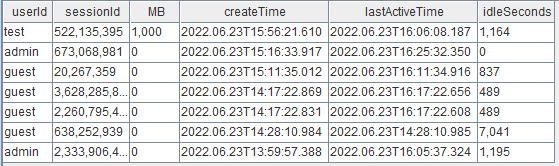
图示，test 用户已经空闲15分钟了，视情况可以关闭此 session，并回收1000MB的内存。
连接管理
在 Linux 中，DolphinDB 的一个 connection 对应一个 TCP 连接。在物联网场景下，需要调整连接数（每个 tcp 连接消耗 4K 内存，对操作系统消耗不大），以应对高 QPS 需求，建议将计算节点的配置设置为
maxConnections=5000及以上。The number of incoming connections has reached the limit of 512当日志出现以上信息时，说明连接已经不足，检查程序是否存在连接泄露的情况。应急处理请使用
closeSessions()清理一些空闲会话以回收连接，并增加 maxConnections 。
慢查询
慢查询通常会引起系统雪崩，需要重点关注。DolphinDB 提供一个 job log 日志文件，记录 DFS 表相关查询日志，默认在 log 目录下，名称为 nodeAlias_job.log。
监控 top10 sql
jobLogFile = getConfig(`jobLogFile) queryLog = loadText(jobLogFile) select node ,userId ,sessionId ,jobDesc as sqlText ,startTime ,endTime ,(endTime$DATETIME - startTime$DATETIME ) as costSeconds from queryLog order by (endTime$DATETIME - startTime$DATETIME ) desc limit 10图 21. 图4_3 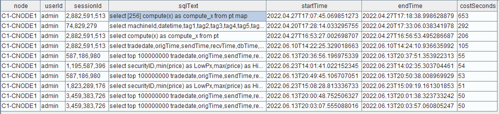
如图，根据 sqlText，userId，运行时间及时长，综合分析处置慢查询，比如限制一些用户进行较大规模的查询，以及对部分查询效率和速度较低的 SQL 语句进行优化。
参数设置
计算节点不需要设置 DFS 表存储相关的参数，包括：volumes, chunkCacheEngineMemSize, tsdbCacheEngineSize, redoLogDir 等。计算节点的核心参数包括：MaxMemSize, MaxConnections, workerNum, *maxQueryResultLimit *等。
计算节点扩缩容
相比于数据节点，计算节点扩缩容非常简单快捷，支持在线扩缩容。
扩容
在新机器上部署和配置 agent
拷贝原机器上的 agent 部署包到新机器，并修改 agent.cfg，如
mode=agent workerNum=4 localSite=192.192.168.4:8950:C4-agent controllerSite=192.192.168.4:8990:controller3 sites=192.192.168.4:8950:C4-agent:agent,192.192.168.2:8990:controller1:controller,192.192.168.3:8990:controller2:controller,192.192.168.4:8990:controller3:controller lanCluster=0注意：主要修改新机器上代理节点的 IP 和端口，以及控制节点集群的 IP 和端口。
在 web 集群管理界面修改
Nodes Setup配置，新增 computenode 和 agent。图 22. 图4_4 
注意：在添加完每个节点的信息之后，切记点一下该行最后的 +（加号），确保添加成功。
在 server/ 目录下面执行如下命令，启动新节点的 agent
nohup ./DolphinDB -console 0 -mode agent -home data -config config/agent.cfg -logFile log/agent.log &重启 controller 节点使配置生效
回到 web 管理界面，可以看到已经新增了一个 agent4 并且是未启动状态。
图 23. 图4_5 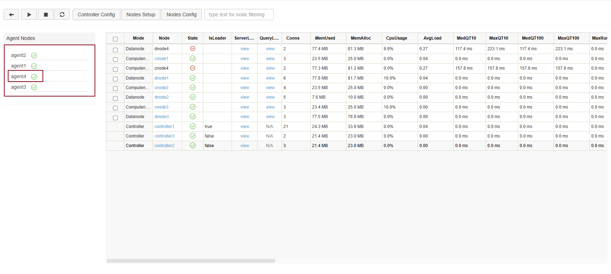
注意：代理节点的信息需要在重启集群的controller节点之后才能显示出来，数据节点和计算节点在添加完之后刷新页面就可以观察到。
图 24. 图4_6 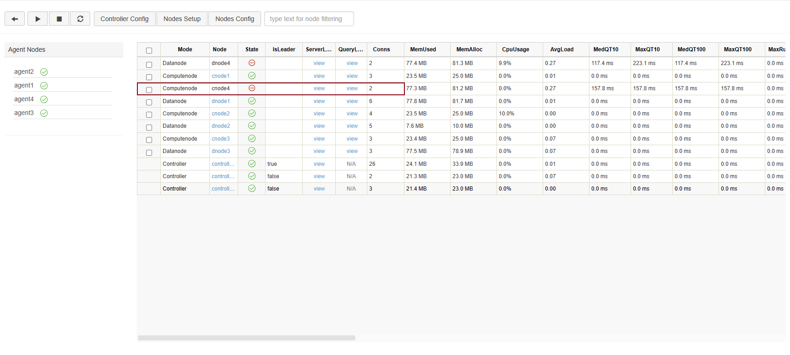
启动新计算节点
图 25. 图4_7 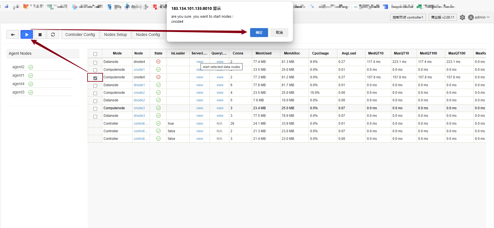
进入新增计算机节点 web 页面，执行查询命令，检查新增数据节点是否能够正常工作
图 26. 图4_8 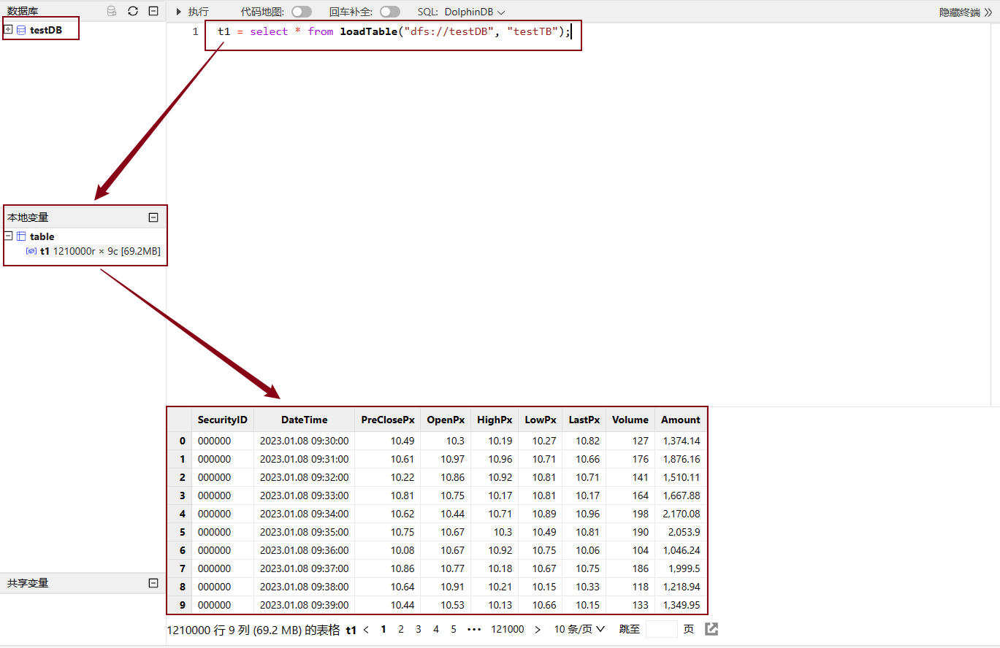
注意：新计算节点命名应遵守部署文档中提到的命名规则，以确保 cluster.cfg 能赋予新的计算节点正确的配置。
缩容
停止计算节点
在 web 集群管理页面停止对应计算节点，等待其安全关闭，通常需要数秒。
修改集群配置
在
nodes Setup中删除对应的 computenode 节点。注意：执行完上述操作之后，页面的计算节点信息并不会消失，需要重启集群的控制节点才会消失。
总结
计算节点不存储分布式数据，使用计算节点可以有效地提升集群的写入稳定性，缩短故障修复时间。计算节点之间相互隔离，架构设计者可根据应用场景，灵活地部署业务至各计算节点。推荐将流计算、机器学习部署至计算节点。在运维管理上，计算节点可以快速重启、方便地在线扩缩容。